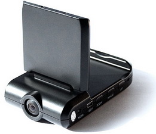
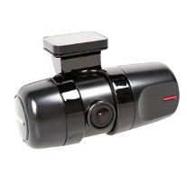
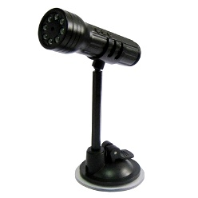
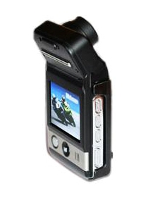

Автомобильные видеорегистраторы.

С недавних пор, у водителей автомобилей появился помощник в решении спорных вопросов ДТП. Это помощник является нечто иное как видеорегистратор.
Идея снабдить автомобиль видеозаписью с самого начала имела успех, так как автомобильный видеорегистратор, позволяет выполнять видеозапись движения
автомобиля даже на длительные расстояния.
По сути, видеорегистратор купить который, может любой желающий, ввиду его невысокой цены, это обычная цифровая видеокамера.



Благодаря регистратору, не придётся долго доказывать свою правоту дорожным инспекторам, и он всегда зафиксирует все детали ДТП. Поэтому в автомобиле этот аппарат,
очень нужная вещь. Обычно все видеорегистраторы снабжены батареей, способной обеспечить, работоспособность до двух часов. Но если подключить его к прикуривателю,
то он будет вести видеосъемку до тех пор, пока его не отключат или он не сломается. Как правило, для просмотра видеозаписей используют компьютер, купить который можно
в компьютерном интернет-магазине cooler.by, но так не на всех моделях.
Многие регистраторы снабжены широкоформатным дисплеем. Это позволяет прямо на месте посмотреть видеоролик, отснятый во время движения. Благодаря возможности расширить память,
в расширительный слот регистратора можно вставить карту памяти от 2-х до 32-х гигабайт. Если же видеорегистратор с цикличной записью, то не стоит беспокоиться о том,
что память закончится. Такие регистраторы умеют удалять из памяти старые фрагменты записи, заменяя их новыми.
Читайте также:
ГЛОНАСС и GPS. В чем отличие?
Влияние монитора на зрение.
Следующая статья:
Самые необходимые компьютерные аксессуары.